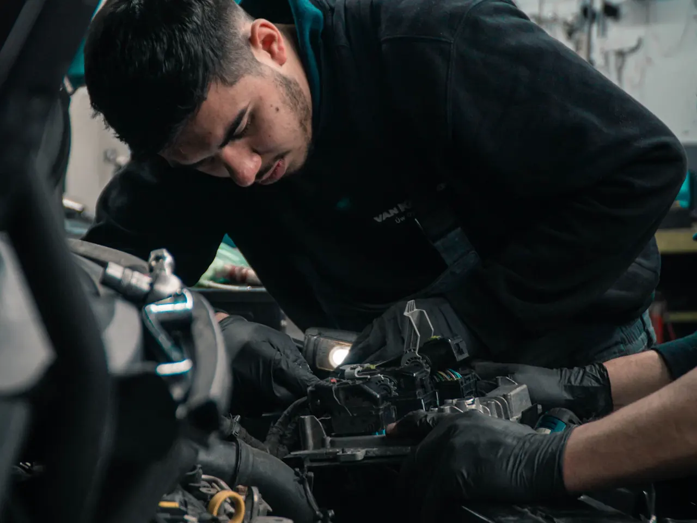

01
ENTENDER ANTES DE TROCAR
Diagnóstico e injeção
Leitura de falhas com scanner, inspeção de sensores, bobinas e injeção eletrônica. Relacionamos os dados com o comportamento do carro.
A luz da injeção acendeu ou perdeu força?
ConsultarPAIXÃO POR MOTORES. PRECISÃO EM CADA DETALHE.
Sua oficina mecânica em Rivera. Diagnóstico criterioso, ferramentas profissionais e tudo explicado desde o primeiro contato.

01 / O QUE FAZEMOS
Da manutenção do dia a dia à falha difícil de encontrar. Mecânica geral para carros nacionais e importados.
Digite o sintoma ou serviço, em português ou espanhol.
ENTENDER ANTES DE TROCAR
Leitura de falhas com scanner, inspeção de sensores, bobinas e injeção eletrônica. Relacionamos os dados com o comportamento do carro.
A luz da injeção acendeu ou perdeu força?
ConsultarSEGURANÇA A CADA METRO
Pastilhas, discos, fluido de freio, amortecedores, buchas e pivôs. Verificamos ruídos, vibrações e o comportamento ao frear.
Faz barulho ao frear ou nas irregularidades?
ConsultarO CORAÇÃO DO SEU CARRO
Mecânica geral, embreagem, distribuição e transmissão. Avaliamos a origem do problema e explicamos o reparo necessário.
O motor falha ou está difícil trocar de marcha?
ConsultarCUIDAR HOJE. SEGUIR AMANHÃ.
Troca de óleo e filtros, verificação de níveis e manutenção preventiva conforme as necessidades do seu veículo.
Está na hora da revisão ou vai pegar a estrada?
ConsultarCADA SISTEMA, NO SEU PONTO
Bateria e sistema de carga, radiador, bomba d’água, válvula termostática e climatização. Buscamos a causa, não só o sintoma.
Não pega, esquenta ou o ar não gela?
ConsultarPARA SEGUIR NO CAMINHO CERTO
Verificação de alinhamento e balanceamento para tratar vibrações, desvios e desgaste irregular dos pneus.
O volante vibra ou o carro puxa para o lado?
ConsultarNão encontramos uma correspondência. Conte o que seu carro está fazendo para orientarmos você.
WhatsApp ↗A busca orienta sobre serviços; o diagnóstico exige a inspeção do veículo.
02 / CRITÉRIO TÉCNICO. EXPERIÊNCIA DE VERDADE.
Gostamos de motores. E ainda mais de entender o que acontece com eles. Na TOP CAR, combinamos experiência mecânica, equipamentos profissionais e um trabalho metódico.
O scanner é o ponto de partida. A inspeção e o critério mecânico completam o diagnóstico.
Equipamentos profissionais para verificar e reparar com precisão. Cada serviço tem seu procedimento.
Explicamos o que encontramos, o que precisa ser feito e quanto custa antes de começar.
03 / COMO TRABALHAMOS
Envie marca, modelo e o sintoma pelo WhatsApp. Combinamos a inspeção.
Verificamos o veículo, explicamos o diagnóstico e combinamos o serviço com você.
Executamos o reparo e os controles correspondentes antes da entrega.
QUANDO O CARRO NÃO PODE SEGUIR
Socorro 24h para carros, caminhonetes e caminhões pequenos. Ligue e informe onde está para coordenar a assistência e confirmar a cobertura.
Em uma emergência, ligue diretamente.04 / DAQUI. DA FRONTEIRA.
Aqui convivem o português, o espanhol e muitos jeitos de falar de um carro. Se procura uma oficina mecânica em Rivera ou perto de Santana do Livramento, estamos do lado uruguaio, na Paysandú 255.
Freios ou frenos. Embreagem ou embrague. Revisão ou mantenimiento. O importante é entender o que seu veículo precisa.
Ver la página en español ↗Combine sua visita pelo WhatsApp antes de vir. Para socorro, consulte a cobertura conforme sua localização; não presumimos atendimento do lado brasileiro.
05 / ENCONTRE A GENTE
Segunda a sexta, das 8h30 às 18h30.
Sábados e domingos fechado. Socorro 24h.
O mapa do Google só é carregado se você abrir.
06 / RESPOSTAS CLARAS
A oficina fica na Paysandú 255, Rivera, Uruguai, na cidade que faz fronteira com Santana do Livramento, Brasil. Você pode abrir o mapa e as rotas nesta página.
Mecânica geral, motor, embreagem e transmissão; diagnóstico com scanner e injeção eletrônica; freios e suspensão; alinhamento e balanceamento; óleo e filtros; bateria, arrefecimento e ar-condicionado. Consulte sobre seu modelo e o serviço necessário.
Sim. Conte se o motor não gira, gira mas não pega, apaga ou perdeu força. Esses detalhes ajudam a combinar a inspeção. A origem da falha é confirmada verificando o veículo.
Sim, a TOP CAR oferece socorro 24h para carros, caminhonetes e caminhões pequenos. Ligue para +598 98 738 689 e informe sua localização para confirmar disponibilidade e cobertura.
Sim, consulte e agende pelo WhatsApp. A oficina fica em Rivera, do lado uruguaio. A cobertura do socorro precisa ser confirmada conforme a localização; não há promessa de atendimento no Brasil.
Envie marca, modelo e o problema do veículo pelo WhatsApp +598 98 738 689. Combinamos o diagnóstico e explicamos o orçamento antes do reparo. O horário habitual é de segunda a sexta, das 8h30 às 18h30; consulte sobre feriados.
TOP CAR / RIVERA
Marca, modelo e aquele barulho difícil de explicar. Começamos ouvindo você.